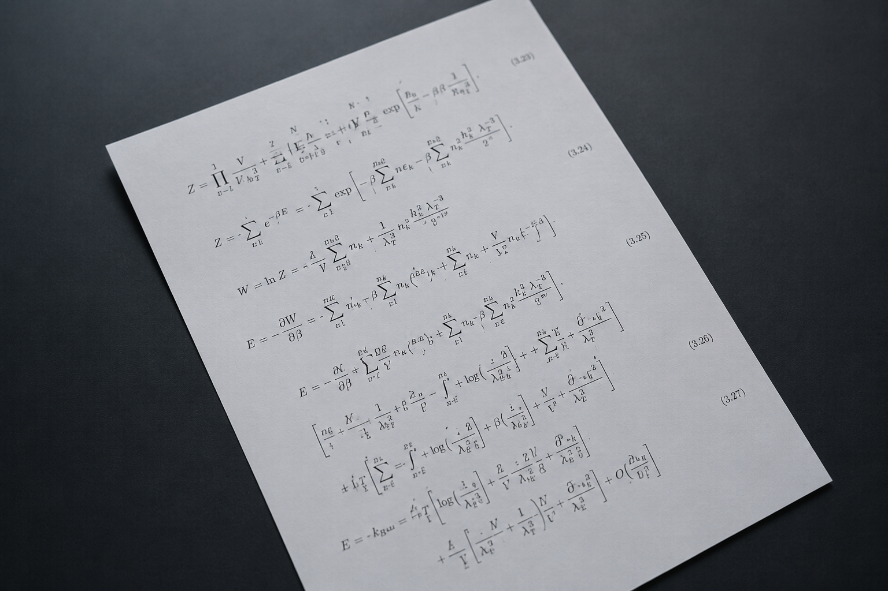
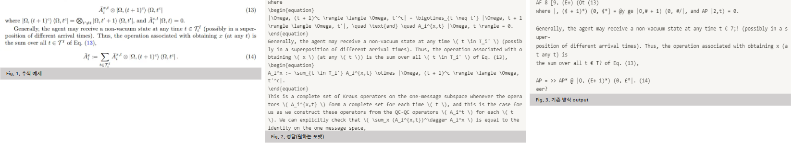
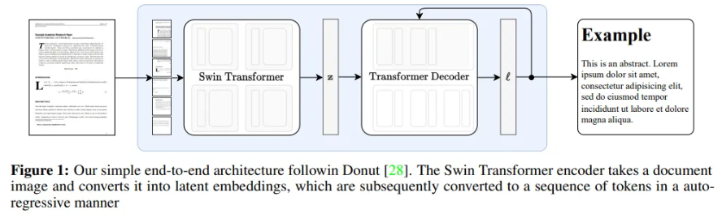
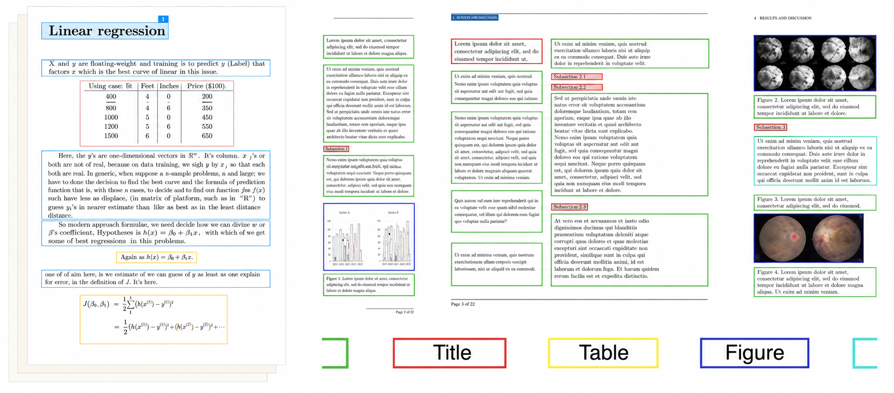

PROJECT TITLE
GPQA 학습 데이터 구축을 위한 수식 OCR 모델 성능 고도화
TECHNOLOGIES
Python · OCR · Nougat · PyMuPDF · LaTeX · LLM Dataset
ROLE
Individual Contributor / 1명 · 기여도 100%
PROJECT
GPQA Physics의 LaTeX 수식을 정확하게 추출하기 위해 OCR Pipeline을 개선하고, 이를 기반으로 계산·추론 문제 중심의 LLM 학습 데이터셋을 구축했습니다.
Overview

기존 PDF Text Extraction 방식으로는 GPQA Physics의 복잡한 LaTeX 수식을 정확하게 복원하기 어려웠습니다.
PyMuPDF와 Nougat의 성능을 비교하고 Error Case를 분석한 뒤, Layout 기반 수식 영역 추출 방식으로 입력 구조를 개선해 LLM 학습 데이터 구축에 활용 가능한 수준까지 수식 OCR 성능을 높였습니다.
PDF → Formula Region Extraction → Nougat OCR → LaTeX → LLM Training Dataset
Problem

GPQA Physics 데이터에는 첨자, 특수기호, 다중 행 수식 등 구조가 복잡한 LaTeX 표현이 포함되어 있었습니다.
기존 PyMuPDF 기반 PDF Extraction에서는 수식 구조가 손실되거나 잘못된 Text로 변환되는 문제가 발생해, LLM 학습 데이터로 활용할 수 있는 수준의 수식 품질을 확보하기 어려웠습니다.
Analyze
기존 PyMuPDF 방식과 Nougat 기반 OCR 결과를 비교하고, 수식별 Error Case를 정량·정성적으로 분석했습니다.
그 결과 모델 자체보다 다음 두 가지 요소가 성능에 큰 영향을 준다고 판단했습니다.
- 수식 외 Text와 Layout 정보가 함께 입력되는 문제
- 수식 길이와 크기에 비해 OCR 입력 영역과 Input Size가 적절하지 않은 문제
모델을 다시 학습하기보다 수식 영역을 정확히 분리한 뒤 Nougat에 입력하는 Pipeline 개선을 핵심 방향으로 설정했습니다.
Action
1. Baseline & Error Analysis
GPQA Physics의 수식을 대상으로 기존 PyMuPDF Extraction 결과와 Nougat 기반 OCR 결과를 비교했습니다.
수식 구조가 조금이라도 다르면 오류로 처리하는 Strict Exact Match 기준으로 평가해, 실제 학습 데이터 구축 관점에서 사용할 수 있는 수준인지 검증했습니다.
2. Nougat 기반 Formula OCR Pipeline 적용

일반적인 PDF Text Extraction 대신 수식 및 문서 구조 복원에 특화된 Nougat를 적용해 LaTeX 수식 변환 성능을 개선했습니다.
초기 Nougat 적용만으로도 기존 방식 대비 오류를 크게 줄였지만, 긴 수식과 복잡한 Layout에서는 추가 오류가 남아 있었습니다.
3. Layout 기반 수식 영역 추출

Error Analysis 결과를 바탕으로 수식 영역만 Layout 기반으로 분리한 뒤 Nougat에 입력하는 방식으로 Pipeline을 개선했습니다.
불필요한 주변 Text와 Layout 영향을 줄이고, OCR이 실제 수식 영역에 집중하도록 입력 구조를 재설계했습니다.
4. Error Case 분석 및 후속 개선 방향 도출
잔여 오류를 분석해 다음 유형을 주요 실패 케이스로 정의했습니다.
- 긴 수식
- Multi-line Equation
- Subscript / Superscript
- 특수기호 및 복잡한 LaTeX 표현
이를 기반으로 Input Size 조정과 수식 유형별 처리 전략 등 후속 개선 방향을 도출했습니다.
5. GPQA 기반 LLM 학습 데이터 구축
개선된 Formula OCR Pipeline으로 GPQA Physics의 수식을 LaTeX 형태로 추출하고, 계산·추론 문제 기반 LLM 학습 데이터셋 구축에 활용했습니다.
Result

| Method | Error Rate |
|---|---|
| PyMuPDF | 100% |
| Nougat | 20% |
| Nougat + Layout Extraction | 16% |
- 엄격한 Exact Match 기준에서 수식 인식 오류율 100% → 16%로 개선
- GPQA Physics의 LaTeX 수식을 안정적으로 추출할 수 있는 LLM 학습 데이터 구축 Pipeline 확보
- 구축한 학습 데이터가 활용된 모델의 LLM Leaderboard 11B 이하 부문 세계 1위 달성에 기여
More Detail
프로젝트 성과와 관련된 자세한 내용은 아래 기사에서 확인할 수 있습니다.
View Article ↗